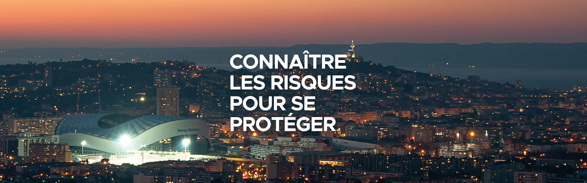

La voie est libre : profitez de la Corniche piétonnisée ce dimanche 19 novembre
Marseille - Le magazine des Marseillaises et des Marseillais
La Ville de Marseille s'engage pour l'Olympiade Culturelle
La Ville de Marseille engagée pour la prévention des risques majeurs
Marseille célèbre la Journée internationale des droits de l'enfant
Rejoignez le Conseil marseillais de la vie étudiante, la Ville de Marseille vous donne la parole !
La Ville de Marseille poursuit son engagement contre la précarité étudiante
"Baya. Une héroïne algérienne de l'art moderne" au Centre de la Vieille Charité